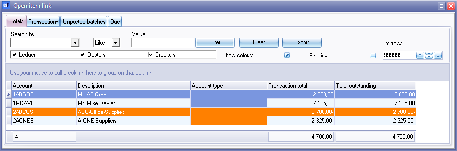
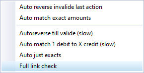

Open item link - Totals tab
The Totals tab will list the transaction total and total outstanding total for open item accounts.
Show colours - Option selected where no transactions have incorrect or outstanding links.

Show colours - If this field is, selected, This will show red or orange colours for those accounts and transactions which have incorrect or outstanding links.

|
|
Account type:
|

Filter options
Filter options:
- Search by - Select any of the column headings and an operator (e.g. Like (default), =, <, >, <=, =>, or <> ) and enter a value. Click on the Filter button. Only those transactions matching your specified values will be listed. To clear the values, click on the Clear button.
- Account type - Select (tick) or deselect (remove the tick) to list the accounts for the selected account type(s) (Ledger, Debtors or Creditors).
- Show colours - If this field is, selected, This will show red or orange colours for those accounts and transactions which have incorrect links.
- Find invalid - Select (tick) and click on the Filter button to list those accounts and transactions which have incorrect links.
- limitrows - Limit rows - 200 rows is the default number of rows or transactions to be listed. The number of rows may be specified (decreased or increased).
- Export - This button will create an Export.txt (Text files), which you may change the name and folder and save it. A Comma separated (CSV) file format is also available. This will export the list, as selected and/or filtered and displayed in the Totals tab, as a comma separated text file as a "Export.txt" file. The Exported file will automatically be opened in your in your system's app (program) associated with the CSV (Comma Separated Values) file types.
Column headings
The columns is as follows:
- Account - Account code.
- Description - Account name or account description.
- Account type - Ledger (General ledger accounts, Bank accounts and Tax accounts), Debtors or Creditors. The account type values is as follows:
|
|
Account type:
|
- Transaction total - The total of the actual transactions in posted batches and documents.
- Total outstanding - The outstanding total of outstanding transactions, which is not matched linked. If the totals in the "Transaction total" and "Total outstanding" columns matches; or is displayed in the default system font, it means that all transactions are linked (matched). In this example, the font colour of "ABC-Office-Supplies", is in an orange font colour or row background colour. This indicates that there may be some transactions which is not linked (matched).
|
|
You may also drag columns to the "Use your mouse to pull a column here to group on that column" row. |

Context menu
Right-click on a selected account on the list, to launch the context menu for the following processing options.
